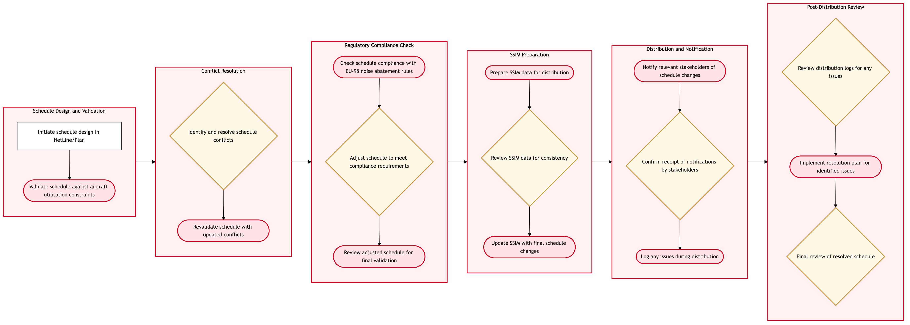

Updated 2026-08-18
Schedule Publication and SSIM Distribution
The frozen schedule is published to the industry in IATA SSIM format and loaded into inventory so it becomes sellable. Publication reaches global distribution systems, alliance partners, airports and the direct channels.
Air Canada contextPublication is the point at which a planning decision becomes a public commitment. The mechanics are unglamorous and load-bearing: SSIM files and IATA Type-B messaging still carry schedule change across the industry, and a schedule that is inconsistent between inventory and the GDS estate produces bookings Air Canada cannot honour. Post-freeze changes are the main source of that inconsistency, because each one has to propagate through every channel in the same cycle.
Process flow
Click to zoom

Process steps
▼
Phase 1 — Publication preparation
4 steps
| Step | Activity | Role | System | Input | Output | KPI | Dec | Exc | Pain point |
|---|---|---|---|---|---|---|---|---|---|
| 1.1 | Extract the frozen schedule | Schedule Publication Analyst | Lufthansa Systems NetLineB | Frozen seasonal schedule | SSIM-format schedule extract | Extract produced within 1 business day of freeze | N | N | Post-freeze changes mean the extract is often already stale when it is produced |
| 1.2 | Validate schedule data quality | Schedule Publication Analyst | Lufthansa Systems NetLineB | Schedule extract | Validated extract with exception list | Data quality exceptions below 0.5 percent of legs | Y | N | Validation catches format errors but not commercially wrong timings |
| 1.3 | Apply codeshare and operating carrier designations | Alliance Manager | Star Alliance InterlineA | Validated extract and codeshare agreements | Schedule with correct operating and marketing carriers | Codeshare designations correct at publication at 100 percent | Y | N | Operating carrier designation for Express-operated legs is a recurring source of error |
| 1.4 | Confirm slot alignment before publication | Slot Coordinator | NetLine/PlanB | Schedule extract and held slots | Slot-aligned schedule or exception list | Published timings match held slots at 100 percent | Y | N | Publishing a timing not backed by a slot creates an obligation that cannot be met |
▼
Phase 2 — Distribution
4 steps
| Step | Activity | Role | System | Input | Output | KPI | Dec | Exc | Pain point |
|---|---|---|---|---|---|---|---|---|---|
| 2.1 | Load schedule to inventory | Schedule Publication Analyst | Amadeus Altea InventoryA | Validated schedule | Schedule loaded and sellable | Inventory load completed within the publication window at 100 percent | N | N | Load failures are detected by exception report rather than at the point of load |
| 2.2 | Distribute SSIM to the industry | Schedule Publication Analyst | IATA Type-B MessagingC | SSIM schedule file | Schedule distributed to GDS and industry recipients | SSIM distributed on the published schedule at 100 percent | N | N | Recipients process on their own cycles, so market visibility lags publication unevenly |
| 2.3 | Notify alliance and joint venture partners | Alliance Manager | Star Alliance InterlineA | Published schedule | Partner schedule notification | Partners notified within 2 business days of publication | N | N | Partner notification is a separate manual step from industry distribution |
| 2.4 | Publish to direct channels | Schedule Publication Analyst | aircanada.comA | Loaded inventory | Schedule visible on web and mobile | Direct channels reflect published schedule within 4 hours | N | N | Direct channels can show a schedule the GDS estate has not yet processed |
▼
Phase 3 — Consistency assurance
4 steps
| Step | Activity | Role | System | Input | Output | KPI | Dec | Exc | Pain point |
|---|---|---|---|---|---|---|---|---|---|
| 3.1 | Reconcile inventory against published schedule | Schedule Publication Analyst | Amadeus Altea InventoryA | Published schedule and loaded inventory | Reconciliation with variance list | Inventory to schedule variance below 0.1 percent of legs | Y | N | Reconciliation is periodic, so a variance can be sellable for hours before detection |
| 3.2 | Verify GDS and NDC channel consistency | Schedule Publication Analyst | Sabre GDSC | Published schedule | Channel consistency confirmation | Channel consistency verified within 24 hours of publication | N | N | Each distribution channel has to be checked separately with no consolidated view |
| 3.3 | Handle post-publication schedule change | Schedule Publication Analyst | Lufthansa Systems NetLineB | Approved schedule change | Republished schedule across all channels | Schedule changes republished to all channels within 24 hours | N | Y | Each change re-triggers the full distribution chain and is the main source of channel divergence |
| 3.4 | Trigger passenger re-protection where required | Customer Re-protection Analyst | Amadeus Passenger RecoveryA | Schedule change affecting booked passengers | Re-protection instruction issued | Affected passengers re-protected within 48 hours of the change | N | N | Identifying affected bookings depends on the change being coded correctly at source |
Swim lanes
Schedule Publication Analyst1.1 1.2 2.1 2.2 2.4 3.1 3.2 3.3
Alliance Manager1.3 2.3
Slot Coordinator1.4
Customer Re-protection Analyst3.4
Systems touched
Lufthansa Systems NetLineBStar Alliance InterlineANetLine/PlanBAmadeus Altea InventoryAIATA Type-B MessagingCaircanada.comASabre GDSCAmadeus Passenger RecoveryAAmadeus Altea ReservationsAA++ Atlantic Joint VentureA
Key performance indicators
- SSIM distributed on the published schedule at 100 percent
- Inventory to published schedule variance below 0.1 percent of legs
- Codeshare and operating carrier designations correct at publication at 100 percent
- Schedule changes republished to all channels within 24 hours
- Published timings matching held slots at 100 percent
Risks and control points
- Schedule inconsistency between inventory and the GDS estate producing bookings that cannot be honoured
- Publishing a timing not backed by a held slot, creating an unmeetable obligation
- Operating carrier misdesignation on Express-operated legs, which also misdirects regulatory responsibility for the flight
- Post-freeze changes propagating unevenly and leaving channels divergent
- Re-protection missed because a schedule change was coded incorrectly at source
Air Canada Process Wiki — process and systems reference compiled from public sources
for IT Application Management and User Support pre-sales discovery.
Built 2026-08-20. Every system carries an evidence tier: tier C is an industry pattern and tier U is an open
question, and neither should be asserted as fact about Air Canada without confirmation in discovery.
Not affiliated with or endorsed by Air Canada. Air Canada, Aeroplan and Altitude are trademarks of Air Canada.